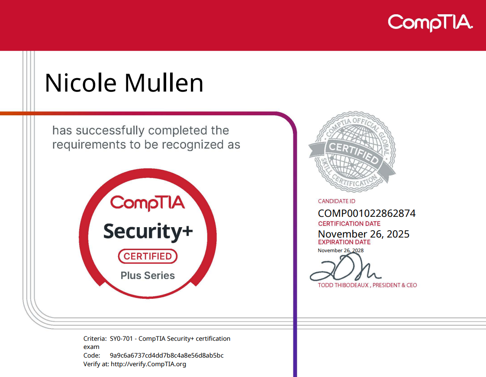
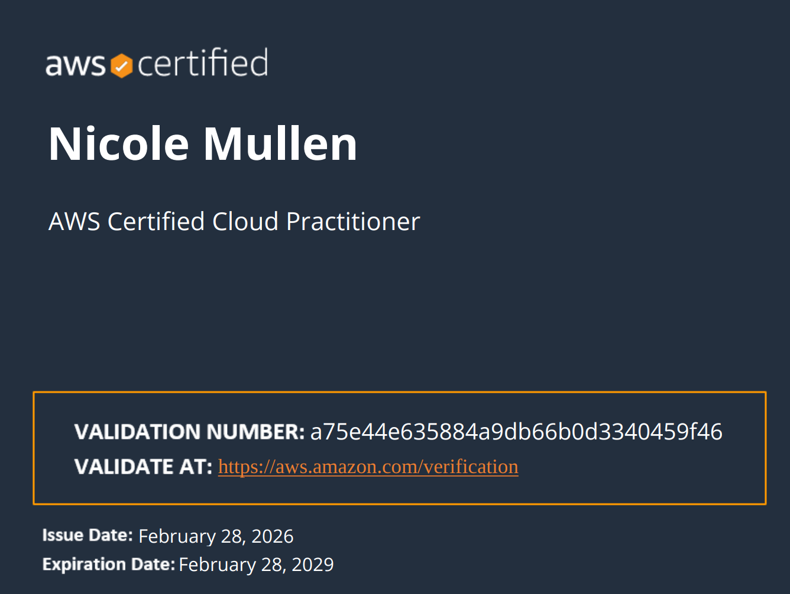
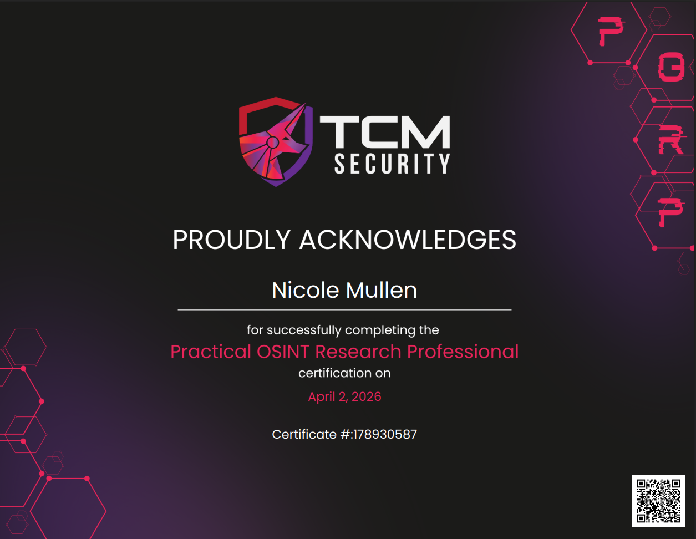
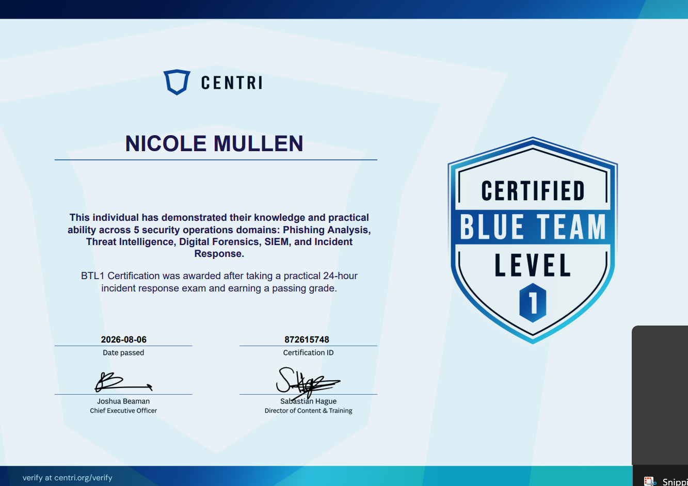
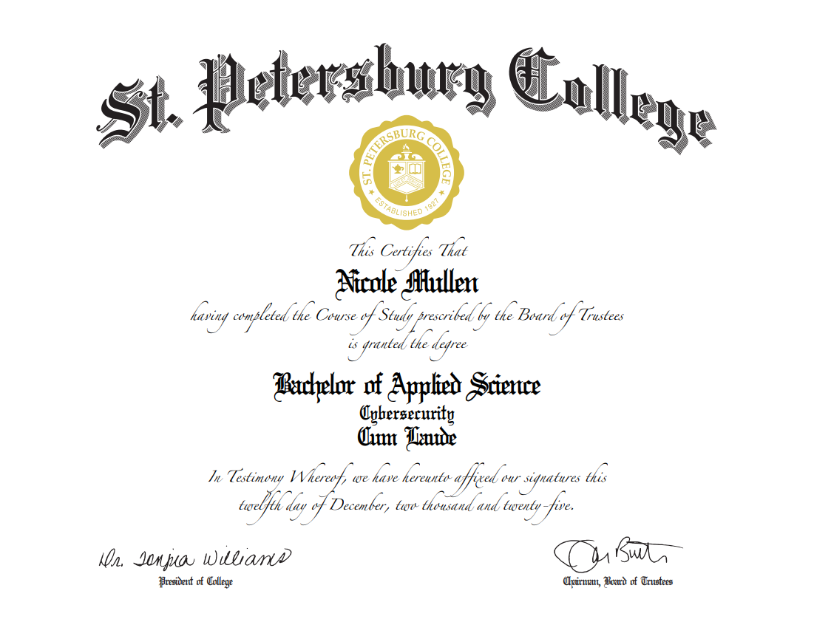
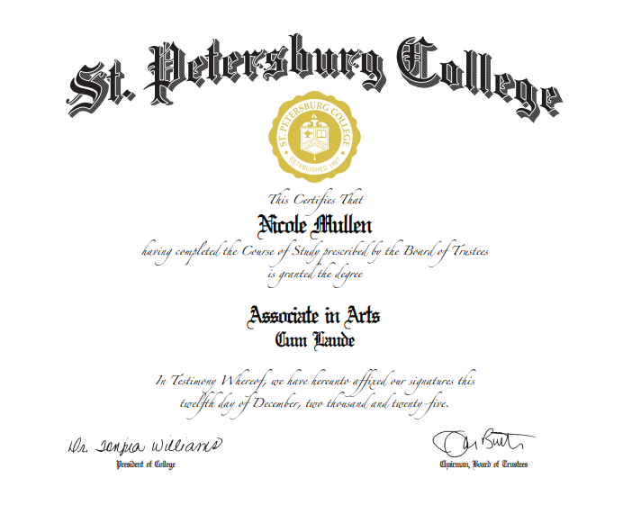

CompTIA Security+
- Issued:
- November 26, 2025
- Expires:
- November 26, 2028
Certifications and education supporting my work in cybersecurity, cloud, and investigative research.





St. Petersburg College
